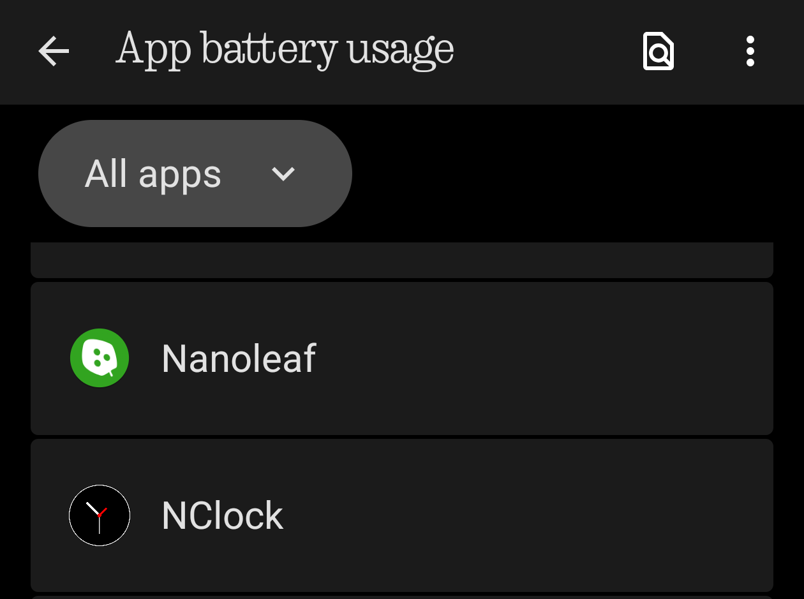
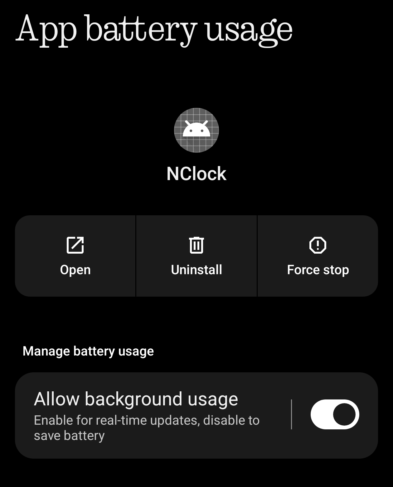
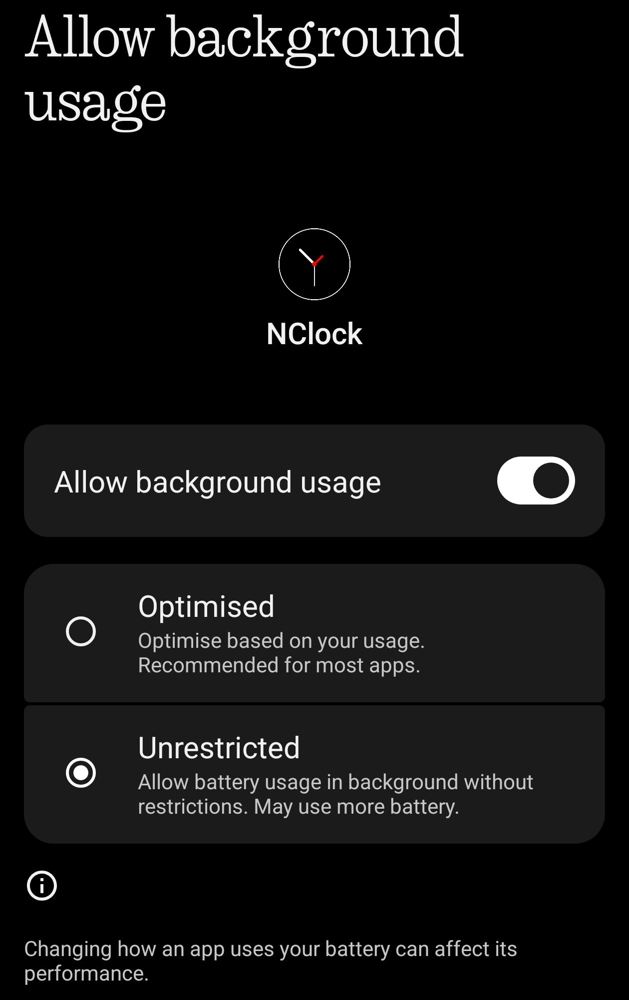

Background Usage_
Ensuring NClock Reliability on Nothing OS
To ensure your alarms and timers always trigger on time, Nothing OS requires NClock to be set to "Unrestricted" battery usage. This prevents the system from hibernating the app's core services.

Step 1: Select N Clock
Long-press the NClock icon on your home screen or app drawer and tap the "App Info" (i) icon. Navigate to the App battery usage section.

Step 2: Click on Allow background usage
By default, Nothing OS sets apps to "Optimized." That is not visible here. Tap on Allow background usage

Step 3: Select "Unrestricted"
Select "unrestricted"